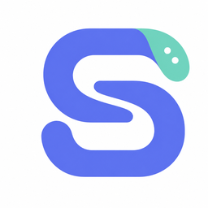

陪伴，有一点回应
轻轻眨眼，望向鼠标。用表情和小动作，回应桌面上的日常。

GlassDesk0.1给 WINDOWS 桌面，一点温度
常看的时间，随手可控的音乐，和一双会回应你的眼睛。需要时轻轻展开，陪你待在桌面上。
Windows 11 · x64 · 自带运行依赖
小展开 · 交互演示
试着移动鼠标，或和它打个招呼。
网页曲目与按钮用于交互演示，不会播放声音或控制你的播放器。应用中的歌曲、封面来自实际音乐来源。
轻轻眨眼，望向鼠标。用表情和小动作，回应桌面上的日常。
展开看封面、切歌或暂停。暂停一会儿，收起的胶囊就把位置还给时间。
常驻的数字时间，安静地待在身边。选一种喜欢的字体，让它更像你的桌面。
GlassDesk 0.1 · Windows 11 22H2 或更新版本 · x64